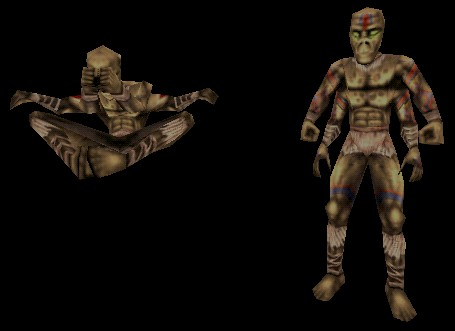

Nali

A meditating Nali on the left, with a Nali Priest on the right who is displaying his colorful body art. |
The Nali are the basic benevolent creatures of the Unreal world. SinglePlayer mappers who put them in their maps are usually trying to demonstrate that not everything in the game is out to kill the player. Nali Priests are usually the kind of Nali that players find in temple-like areas, or they might just be considered to be Nali of a higher station in their society.
Nali are particularly good when mappers give them AlarmTags. A mapper might use an AlarmPoint to get a Nali to show him some plot-relevant location, a Nali might lead the player to a powerful item, or he might open a locked door that the player needs to get past.
Properties
- bNeverBow
- Used to tell a variable to not stop and bow when it's retreating from someone or something. However, it's very buggy, and should only be used in the most well-tested of cases. Also, the Nali should have a HomeBase if the mapper wants to use bNeverBow with the Nali.
- Tool
- Used to get the Nali to hold a weapon. However, this feature was never implemented, and it should be ignored.
Orders
Since Nali don't normally engage in combat, a couple of their combat-oriented orders make them do different things.
- Guarding
- Make a Nali stand and pray, occasionally bowing.
- Ambushing
- Make a Nali meditate in mid-air.